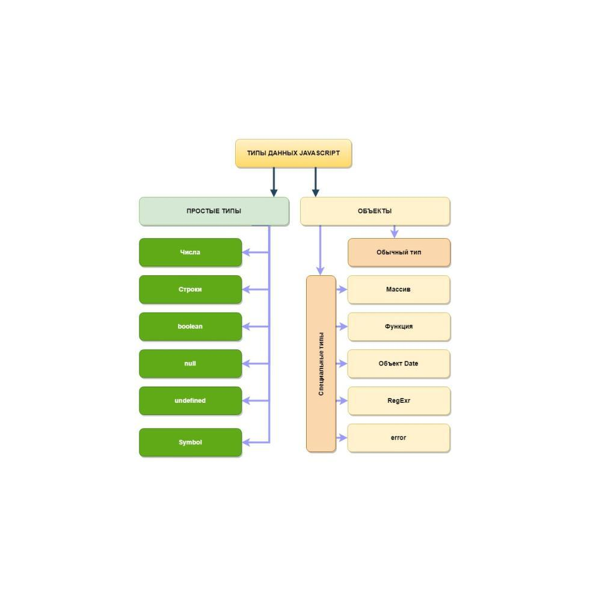

1) Сделать валидацию при получении данных:
- наименование дополнительного источника заработка
- сумма дополнительного заработка
- ввод статьи обязательных расходов
- годовой процент депозита
- сумма депозита
Валидацию, на проверку данных. Где должен быть текст там только текст, где цифры только цифры!
Если валидацию не прошло, то переспрашивать!
2) Возможные расходы (addExpenses) вывести строкой в консоль каждое слово с большой буквы слова разделены запятой и пробелом
Работа с объектами
Методы и свойства массивов
Работа с объектами
Функции О замыкании Очень старая но хорошая статья о замыканиях
Неявное преобразование типов данных

Типы данных
Числа
Строки
Выражения и операторы
Условный (тернарный) оператор
Объект консоль
Обучение git в игровой форме - LearnGitBranching
Интерактивный тур по git
Часто задаваемые вопросы по git
Шпаргалка по консольным командам Git